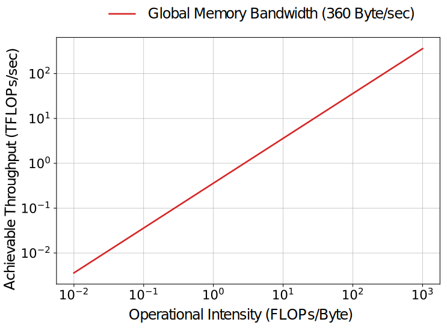
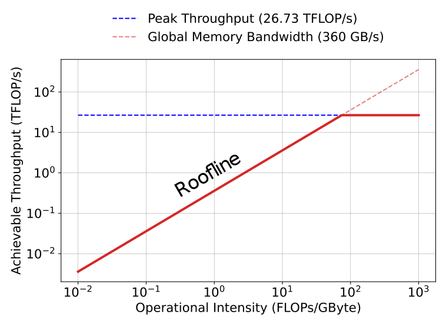
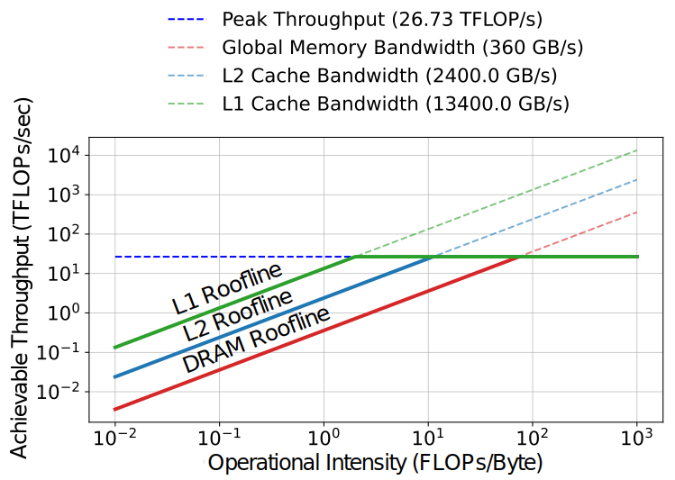
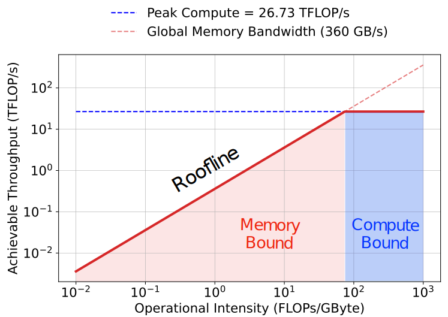
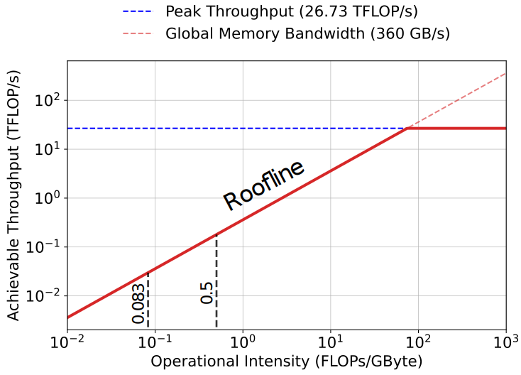

Understanding the Roofline Model
When Should We Stop Optimizing?
Across several labs in the semester, we have systematically optimized a number of different types of workloads . While this approach has taught us how to apply optimizations effectively, it raises a natural question: when is it time to stop? How do we know we’ve reached the point where further optimization won’t yield meaningful performance gains?
Clearly, if we have achieved the best possible performance for our application, we should stop optimizing! To decide when to stop, then, we need an estimate of the best possible performance an application can reach.
At first, the answer might seem messy and complicated. Modern processors use instruction-level parallelism, multi-level caching, and out-of-order execution to keep pipelines busy. With these layers of complexity, it can be difficult to identify a single number that meaningfully represents the maximum performance an application can achieve. It seems like a chicken-and-egg problem: how can you know the limit without first reaching it?
Fortunately, there is an straightforward upper bound that applies to all applications: the performance of any application is capped by the peak performance of the hardware it runs on. The Roofline Model formalizes this intuition, providing a clear framework for reasoning about the upper limits of performance.
Roofline Model
The Roofline Model helps us define the best possible performance that can be achieved on particular hardware. In this model, performance is expressed in terms of throughput.
Throughput is the rate at which a processor executes operations, typically measured as the number of floating-point operations completed per second (FLOPs/sec).
To determine when to stop optimizing, we need to quantify the maximum possible throughput for our application. In other words, we need to quantify the maximum number of floating point operations that can be performed per second. Intuitively, this quantity is a function of two facts:
- The rate at which data can be fetched (measured in byte/sec), also known as the memory bandwitdh, as discussed in lecture.
- The number of floating-point operations performed per byte of data (measured in FLOPs/byte), also known as the operational intensity of the workload, as defined below.
Operational Intensity is the ratio of the total number of floating-point operations performed to the total amount of data transferred.
Intuitively, multiplying the operational intensity and the memory bandwidth gives us the throughput of the system. As the number of floating-point operations performed per unit of data increases — or, as the operational intensity rises — the maximum achievable throughput increases too.
Let’s make this concrete using our GPU, the RTX 4000 Ada. As we’ve seen from lecture, it has a global memory bandwidth of 360 GB/sec. If we plot throughput against increasing operational intensity under this bandwidth, the maximum achievable throughput rises linearly with intensity.

Of course, memory is only part of the picture. No processor can perform an unlimited number of operations per second, even if the worload has an infinite operational intensity. Our GPU also has a built-in cap on the total number of operations it can execute per second. This hardware-imposed ceiling is known as the peak throughput of the GPU.
Peak throughput is the theoretical upper bound on a processor’s computational rate, assuming all execution units are fully utilized with no stalls or bottlenecks.
A quick search about the RTX 4000 Ada gives us the following peak throughput numbers:
| Datatype | Peak Throughput |
|---|---|
| FP16 (half) | 26.73 TFlops/sec |
| FP32 (float) | 26.73 TFlops/sec |
| FP64 (double) | 417.6 GFlops/sec |
That is, the RTX Ada 4000 can perform a maximum of 26,730,000,000,000 FP32 operations per second.
Aside: Peak throughput numbers are often reported using the fused multiply-add (FMA) instruction. Even though it’s a single instruction, it counts as two floating-point operations: one multiplication and one addition.
Given the hard computational limit imposed by peak throughput, we now have a clear upper bound on the maximum performance our GPU can deliver. No matter how much we increase operational intensity, throughput cannot exceed this ceiling. Together, memory bandwidth and peak throughput define the two fundamental limits of performance on our machine, and the Roofline Model captures both in a single picture.

The curve formed by combining the bandwidth limit and the peak throughput resembles the outline of a roof — hence the name.
Although we have focused on global memory bandwidth, the roofline can also be drawn for data residing in L1 or L2 cache. In that case, the operational intensity required to reach the compute-bound regime is lower than when accessing data from global memory.

Key Concept: Each machine has its own roofline plot. The plot, which is determined by the peak bandwidth and peak FLOPs/s that the machine can perform, does not change as applications change. However, where your application lands on that plot depends on the operational intensity of the application itself.
Compute-Bound and Memory-Bound Regimes
One useful application of the Roofline model is that it classifies workloads as either memory-bound or compute-bound:

- Memory-bound workloads are limited by data movement rather than computational capacity.
- Compute-bound workloads are constrained by the processing power of the hardware.
This classification helps direct optimization efforts towards the dominant bottleneck — either improving data locality and bandwidth utilization or enhancing computational efficiency.
Locating Applications on the Roofline Curve
To build intuition for how the roofline curve works, let’s look at a few simple kernels and see where they fall on the model. From the plot, notice that determining an application’s maximum achievable throughput only requires computing its operational intensity.
Adding Two Arrays Element-wise
Consider a kernel that reads two arrays and writes their sum into a third array. For arrays of size , the operational intensity is:
Matrix-Vector Multiplication
Matrix-vector multiplication involves multiplying an matrix by a vector of length to produce a vector of length :
For this operation, we perform floating-point operations (each row of requires multiplies and adds, which equals FLOPs per row, or approximately FLOPs per row for simplicity) and transfer bytes for the matrix and bytes for the input and output vectors. The operational intensity is:
We can visualize these applications on our roofline now:

Aside: The Roofline Model is an idealized model of the machine, and it is not always possible to reach peak throughput for an application.
The Roofline Model represents an upper bound on the performance an application can achieve. For many applications, especially those with unpredictable memory access patterns or complex control flow, it is not a tight upper bound. Determining a more realistic performance ceiling for these workloads is challenging and remains an active area of research.
Microbenchmarking
- Try to recreate the roofline for our machine. At what operational intensity do you empirically observe the cutoff point where the workload transitions from memory-bound to compute-bound?
Further Reading
If you’d like to explore these concepts further, here are a few recommended resources:
- Roofline Model: The original paper by Williams et al. (2009).
- Amdahl’s Law: Presents a model for understanding the theoretical limits of parallel program speedup, highlighting why some workloads cannot be fully accelerated by adding more cores.
- Little’s Law: Presents a model for relating the average number of tasks in a system, their arrival rate, and the time they spend in the system, providing insight into performance and throughput bottlenecks.